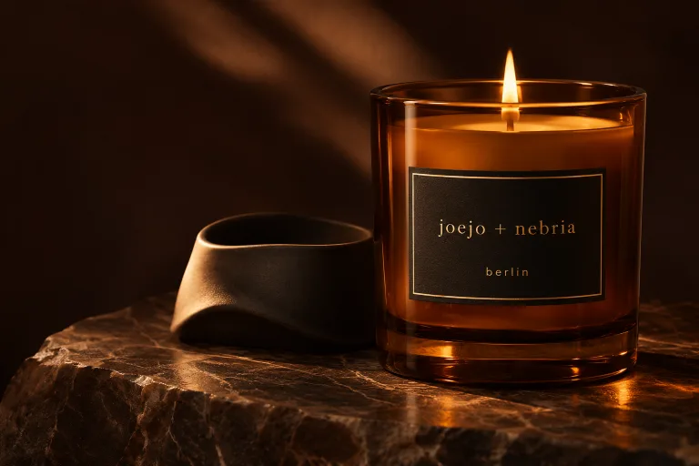
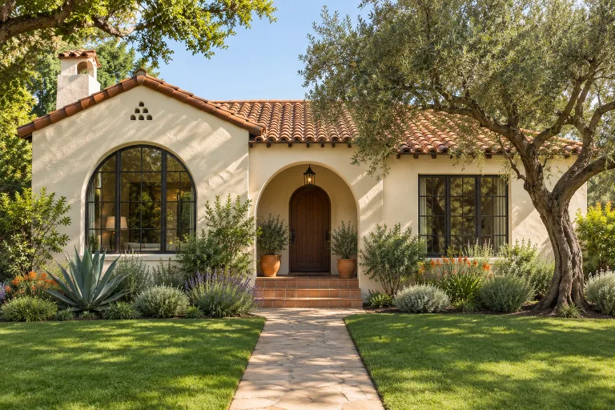
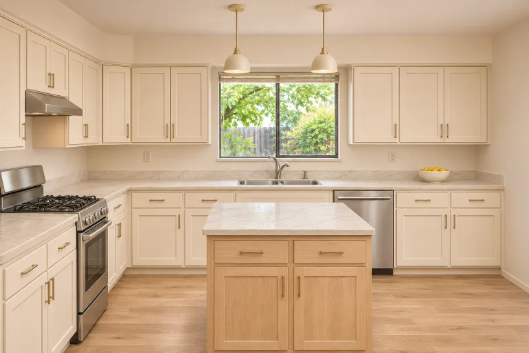

A few possibilities, brought to life
A fresh
perspective.
Four directions for Joejo + Nebria and CKlein Properties. Open a concept, explore the details, and see how it feels on your phone.
 Joejo + Nebria
Joejo + NebriaThe daylight direction.
Warm ivory, natural light, and a quiet focus on the candle.

Joejo + NebriaThe evening direction.
Rich amber, deeper tones, and a more atmospheric storefront.

CKlein PropertiesA better look at sold.
An editorial portfolio that gives each closing room to shine.

CKlein PropertiesThe transformation, clear.
A photo-led renovation portfolio.